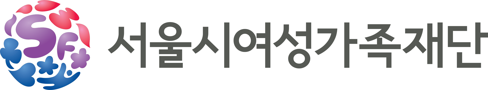

두 사람 이상을 동시에 돌보고 계신 분을 위한 무료 심리상담 지원사업입니다.
신청서 작성에는 10분 정도가 걸립니다.
신청서 안에는 마음 상태를 확인하는 사전 검사가 포함되어 있습니다. 국립정신건강센터와 대한신경정신의학회 기반의 한국형 정신건강 척도를 활용합니다.
출처: 보건복지부 국립정신건강센터
신청과 상담 진행을 위해 아래 정보의 수집·이용에 동의해 주세요. 수집된 정보는 본 사업 목적 외로는 사용하지 않으며, 사업 종료 후 지체 없이 파기합니다.
세 항목에 모두 동의하셔야 다음 단계로 이동할 수 있습니다.
참여 자격 확인
본 사업은 두 사람 이상을 동시에 돌보고 계신 분을 위한 사업입니다. 아래 5개 항목을 확인해 주세요.
Q1현재 서로 다른 세대에 속한 가족 2명 이상을 동시에 돌보고 계신가요?필수
💬 예시: 자녀 + 부모님 / 배우자 + 부모님 / 부모님 + 조부모님
선택해 주세요.
Q2돌보고 계신 분 중 한 분 이상에 대해, 본인이 주된 돌봄 역할을 하고 계신가요?필수
💬 다른 가족과 돌봄을 나누어 하고 계셔도, 본인이 가장 많은 역할을 맡고 있다면 '네'를 선택해 주세요.
선택해 주세요.
Q3두 분 이상을 동시에 돌보기 시작한 지 얼마나 되셨나요?필수
선택해 주세요.
Q4서울시 25개 자치구에 거주하고 계시거나, 서울에서 주로 생활하고 계신가요?필수
선택해 주세요.
Q5만 나이가 어떻게 되시나요?필수
사용 척도(NDS·NAS·NSS)가 만 19~65세를 대상으로 타당화되어 있어 연령을 확인합니다.
선택해 주세요.
참여 조건 확인 결과
응답해 주셔서 감사합니다.
기본 정보
수집된 정보는 상담사 배정과 예약 안내 목적 외에는 사용되지 않습니다
이름을 입력해 주세요.
상담 예약과 안내 알림 발송에 사용됩니다. 숫자만 입력하시면 자동으로 하이픈이 붙습니다.
올바른 휴대전화번호를 입력해 주세요.
검사 결과 리포트 수신용입니다.
이메일 형식을 확인해 주세요.
성별을 선택해 주세요.
출생연도를 선택해 주세요.
자치구를 선택해 주세요.
Q12현재 일을 하고 계신가요?필수
선택해 주세요.
이중돌봄 유형 확인
돌보고 계신 분들 중 누구에게 가장 많은 시간과 신경을 쓰고 계신지 알려주세요
두 분 이상을 돌보고 계신 경우, 이 가운데 지원하는 비율이 가장 높은 분을 주된 돌봄 대상(1순위)으로, 함께 돌보고 계신 다른 분을 추가 돌봄 대상(2순위)으로 선택해 주세요. 함께 살지 않으셔도, 다른 가족과 돌봄을 나누어 하고 계셔도 해당됩니다.
아래 세 가지를 떠올려 보시면 대부분 정리됩니다.
1. 시간 — 하루 중 누구를 위해 더 오래 움직이시나요?
2. 신경 — 자리에 없을 때 누구 걱정이 더 자주 떠오르시나요?
3. 책임 — 갑작스러운 일이 생겼을 때 누구를 먼저 챙기시나요?
세 가지가 서로 다르다면 하루 중 시간을 더 많이 쓰는 쪽을 1순위로 선택해 주세요. 정답이 정해져 있는 문항이 아니며, 선택하신 대로 반영됩니다.
Q13지금 가장 많은 시간과 신경을 쓰고 계신 분은 누구인가요?필수
두 분 이상을 돌보고 계시더라도, 그중 지원하는 비율이 가장 높은 한 분만 선택해 주세요.
주된 돌봄 대상을 선택해 주세요.
Q14추가로 돌보고 계신 가족은 누구인가요?필수
Q13을 먼저 선택하시면 선택지가 나타납니다.
추가로 돌보고 계신 가족을 선택해 주세요.
Q15그 밖에 돌보고 계신 가족이 있다면 모두 선택해 주세요.선택
세 분 이상을 돌보고 계신 경우에만 응답해 주시면 됩니다.
💬 예: 미성년 자녀(1순위) + 고령 부모(2순위) + 고령 조부모(3순위) → '고령 가족' 선택
돌봄 상황
돌봄 상황은 사람마다 크게 다릅니다. 아래 정보는 상담 배정과 결과 분석에만 사용됩니다.
Q16현재 돌보고 계신 가족은 모두 몇 분인가요?필수
선택해 주세요.
Q17돌봄 대상자와 함께 살고 계신가요?필수
선택해 주세요.
Q18돌봄에 쓰는 시간은 하루 평균 어느 정도인가요?필수
선택해 주세요.
Q19어떤 형태의 돌봄을 하고 계신가요?복수 선택
한 가지 이상 선택해 주세요.
Q20돌봄을 함께 나눌 다른 가족이나 도움이 있으신가요?필수
선택해 주세요.
돌봄 부담·소진
총 20문항
마음 상태 체크 — 한국인 우울 척도 (NDS)
총 12문항
마음 상태 체크 — 한국인 불안 척도 (NAS)
총 11문항
마음 상태 체크 — 한국인 스트레스 척도 (NSS)
총 11문항
몇 가지만 더 여쭙겠습니다
답해 주셔서 감사합니다.
S1최근 2주간 그런 생각이 얼마나 자주 들었나요?필수
선택해 주세요.
S2그런 생각이 들 때, 실제로 어떻게 할지까지 구체적으로 생각해 본 적이 있나요?필수
선택해 주세요.
S3지금 그런 생각을 실행할 계획을 가지고 계신가요?필수
선택해 주세요.
S4과거에 실제로 시도한 적이 있나요?필수
선택해 주세요.
참여 유형 선택
두 가지 유형 중 하나를 선택해 참여하실 수 있습니다. 어느 쪽을 선택하셔도 모두 무료입니다.
Q21어떤 유형으로 참여하고 싶으신가요?필수
참여 유형을 선택해 주세요.
상담 신청 이유 및 1:1 상담 조건
어떤 이야기를 나누고 싶으신지 알려주시면, 그에 맞는 상담사를 배정하고 첫 회기를 준비하는 데 도움이 됩니다.
Q27상담을 신청하신 이유는 무엇인가요?최대 3개
💬 꼭 돌봄과 관련된 이유가 아니어도 괜찮습니다. 지금 가장 힘든 것을 선택해 주세요.
돌봄과 관련된 어려움
그 밖의 어려움
0 / 3개 선택
한 가지 이상 선택해 주세요.
Q28그중 가장 먼저 다루고 싶은 것 하나를 골라 주세요.필수
선택해 주세요.
Q29지금의 어려움이 이중돌봄 상황과 얼마나 관련이 있다고 느끼시나요?필수
선택해 주세요.
Q30이전에 심리상담을 받아보신 적이 있나요?필수
💬 현재 다른 곳에서 상담을 받고 계셔도 본 사업에 참여하실 수 있습니다.
선택해 주세요.
Q311:1 상담은 어떤 방식으로 받고 싶으신가요?필수
선택해 주세요.
Q341:1 상담이 가능한 시간대를 모두 선택해 주세요.복수 선택
가능한 시간대를 한 개 이상 선택해 주세요.
앞에서 고르신 것 외에 더 하고 싶은 말씀이 있다면 편하게 적어 주세요. 담당 상담사가 미리 읽고 준비합니다. 몇 줄만 적으셔도 좋습니다.
유의사항 확인 및 제출
마지막 단계입니다. 아래 내용을 확인하고 신청을 완료해 주세요.
두 항목을 모두 확인해 주세요.
신청 내용 최종 확인
내 마음 상태 결과 리포트
이 결과는 진단이 아니라 지금의 마음 상태를 확인하는 참고 자료입니다. 상담 첫 회기에서 상담사와 함께 자세히 살펴보게 됩니다.
※ 검사 결과는 별도로 개별 발송되지 않습니다. 현재 화면에 표시된 결과를 확인해 주세요.